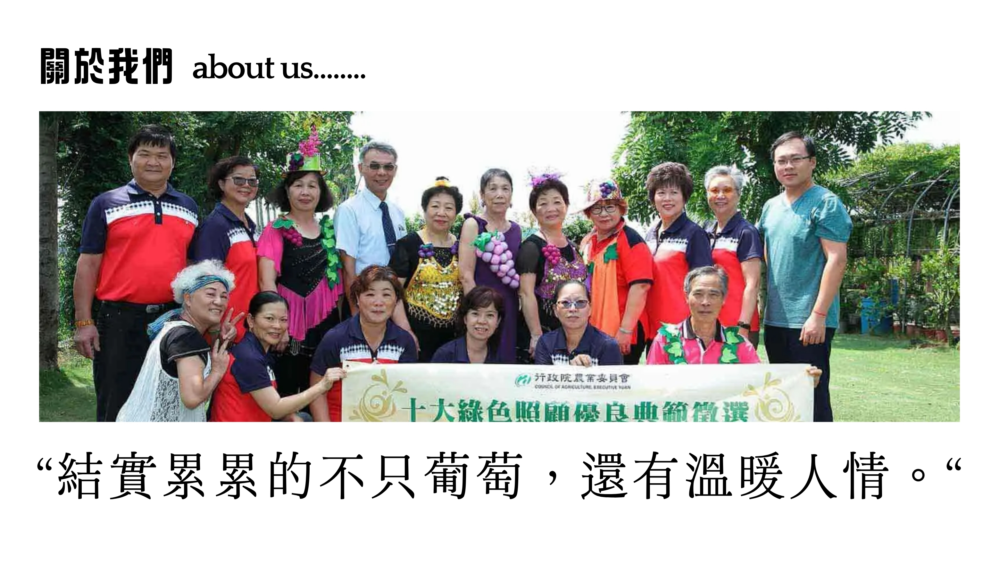
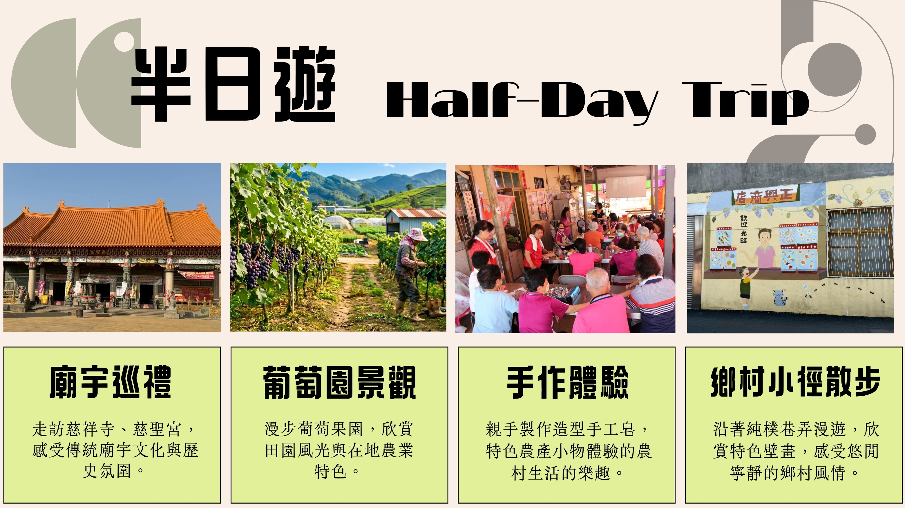

地方故事、農村生活與文化記憶的匯集
擺塘村為一處融合農業特色、地方信仰與鄉村生活記憶的聚落。 本網站以數位導覽方式整合在地景點、寺廟文化、農產特色與遊程資訊， 讓居民與遊客能更深入認識地方故事，發現擺塘村的日常之美。

點擊景點卡片可直接開啟 Google MAP，下方同步顯示景點位置地圖。
擺塘村重要的地方信仰據點，承載居民共同記憶與聚落情感。
以宗教文化與地方故事為特色，展現村落生活中的信仰力量。
為擺塘村重要宗教信仰據點，承載地方居民生活記憶與傳統文化。
結合地方信仰與聚落文化，為村內重要的祭祀與交流空間。
可感受擺塘村葡萄產業與農村田園景色。
展現村內農業生產地景，適合作為慢遊導覽節點。
串聯田園小徑與農村生活，呈現地方產業特色。
可欣賞完整葡萄園聚落與農村景色。
適合散步與拍照，感受擺塘村自然農村風貌。
適合遊客與居民共同參與的慢遊路線
廟宇巡禮 → 葡萄園景觀 → 社區發展協會手作體驗 → 鄉村小徑散步

歡迎認識擺塘村，探索更多地方故事